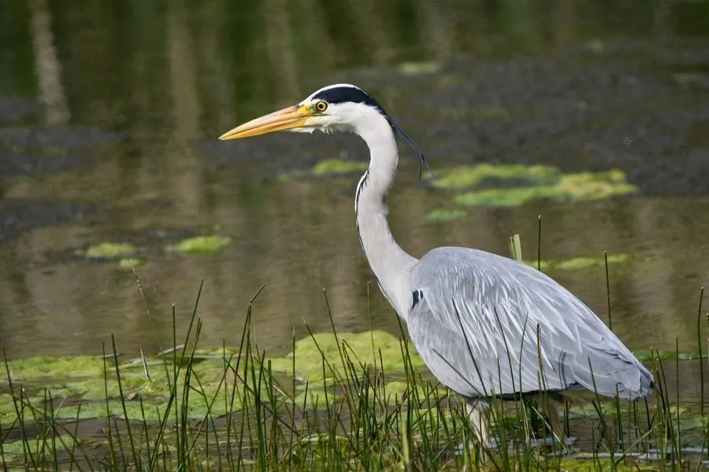

鸟类 · 动物界
苍鹭 Ardea cinerea

体形高大的灰白色鹭类，常单个在水边一动不动地站立等待鱼虾，耐性极佳，被渔民戏称为“老等”。
- 分类
- 门脊索动物门纲鸟纲目鹈形目科鹭科属鹭属
- 栖息环境
- 河流、湖泊、沼泽、水田、鱼塘与海岸潮间带等各类湿地
- 地理分布
- 欧亚大陆和非洲广泛分布，中国各地湿地均可见，北方多为夏候鸟
- 保护级别
- IUCN 无危（LC）；中国“三有”保护动物
物种志
苍鹭体长 90–100 cm，翼展 175–195 cm，体重 1–2 kg，是体形较大的鹭类。它的背部和翅膀为灰色，头顶和颈部白色并带有黑色纵纹，头后垂着几根黑色冠羽，喙粗长呈黄色，腿黄褐色。飞行时双翼宽大，颈部缩成“S”形，双腿拖在身后。
苍鹭广泛分布于欧亚大陆和非洲，中国各地湿地均可见，北方种群多为夏候鸟。它栖息在河流、湖泊、沼泽、水田、鱼塘和海岸潮间带，常长时间一动不动地站在水边等待猎物，靠极快的出喙速度捕获鱼、蛙、昆虫、鼠类甚至小鸟，因此被渔民戏称为“老等”。繁殖期常与其他鹭类混群，在高大乔木上营巢，每窝产卵 3–5 枚，孵化 25–26 天。苍鹭对环境的适应力很强，是湿地生态系统的常见指示物种。
形态与习性
- 食性鱼、蛙、昆虫、鼠类和小鸟
- 体长90–100 cm
- 翼展175–195 cm
- 体重1–2 kg
- 繁殖集群高树营巢，每窝 3–5 枚卵，孵化 25–26 天
- 习性常静立水边等待猎物，可保持同一姿势很久
- 寿命野外约 15 年
趣味知识
- 苍鹭捕鱼时能长时间一动不动，像一尊雕塑，因此被渔民称为“老等”。
- 它会用一条腿站立休息，还会把脖子缩进肩羽中保暖。
- 苍鹭的喙像尖矛，出击速度极快，小鱼很难逃脱。
- 苍鹭常与其他鹭鸟混群繁殖，一棵大树上可聚集数十个巢。